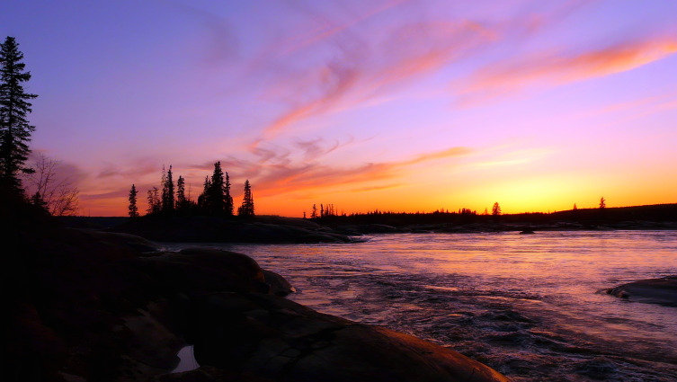
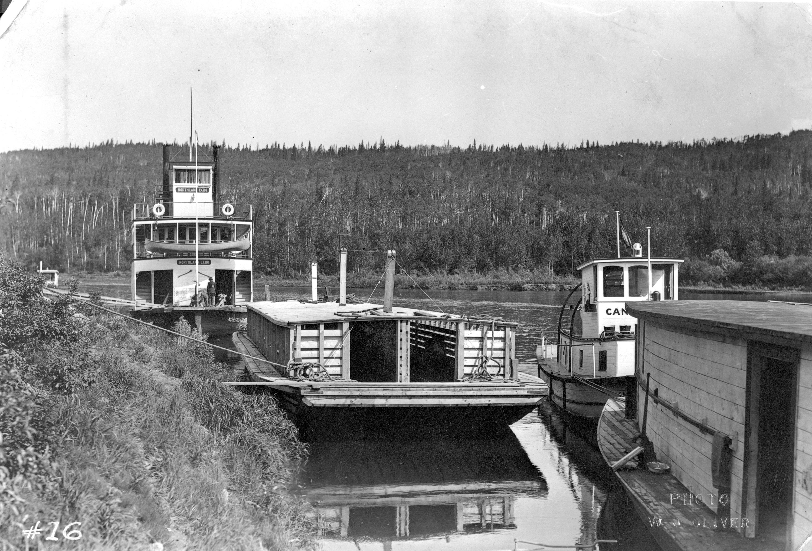
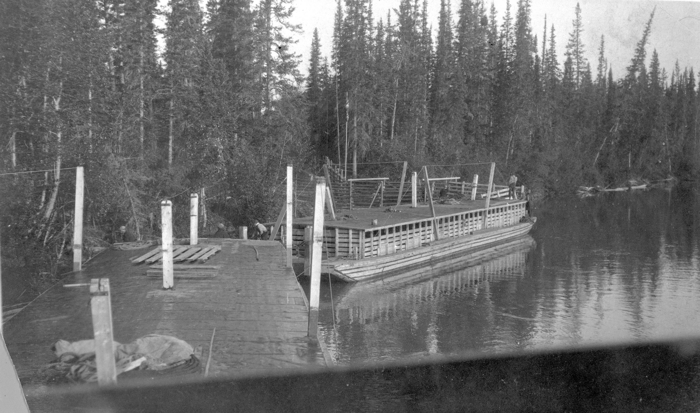
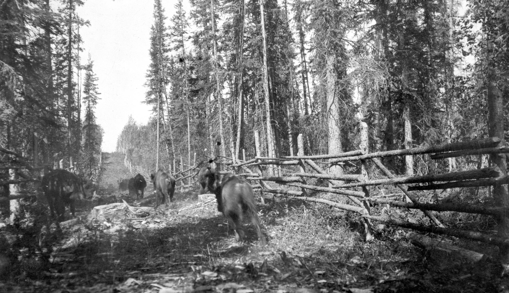
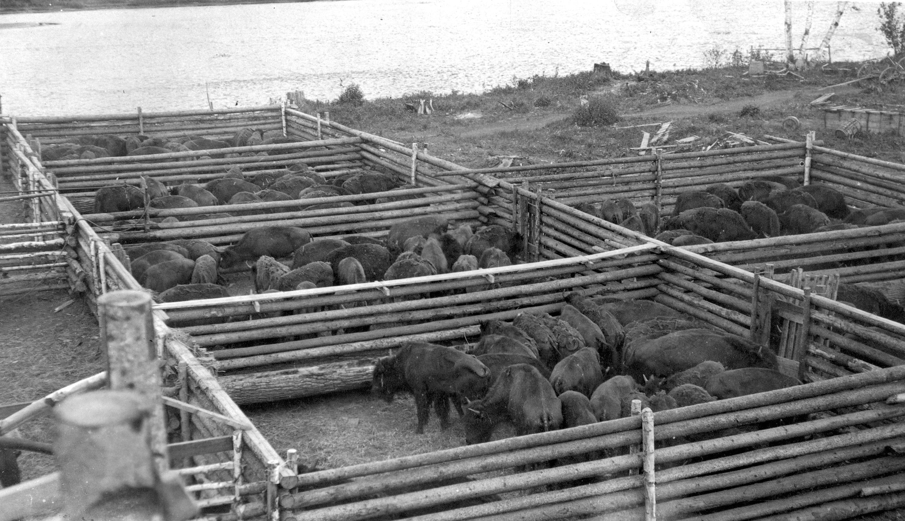
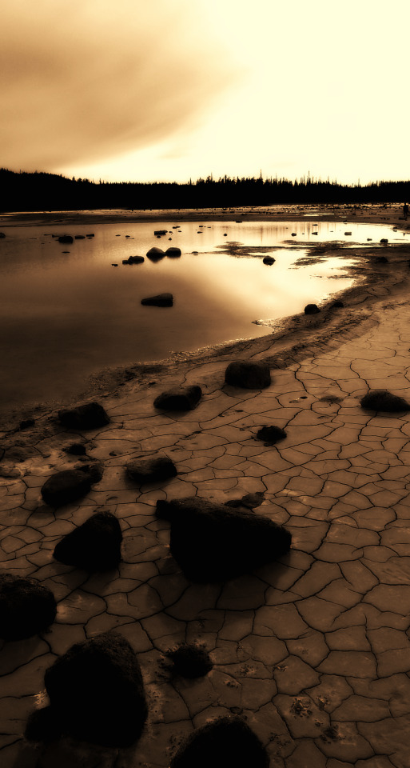
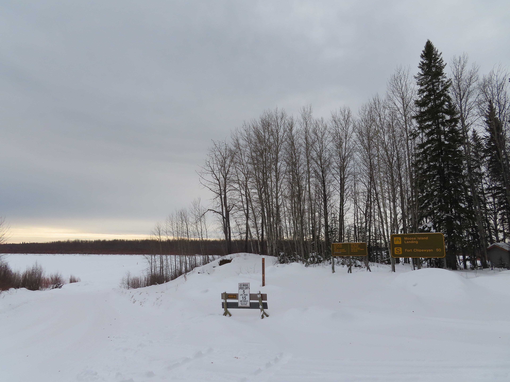

📍 Location: Northeastern Alberta and northwestern Saskatchewan, Canada, straddling the Peace–Athabasca Delta and the Slave River lowlands
📅 Period: Established 1922; landscape shaped by Pleistocene glaciation, Indigenous use spanning millennia, inscribed 1983
🏷️ Category: Natural
⚠️ Status: UNESCO World Heritage Site (inscribed 1983); on the List of World Heritage in Danger since 2024
📏 Significance: Largest national park in Canada; one of the largest freshwater deltas on Earth; last remaining wild population of wood bison; critical nesting habitat for the endangered whooping crane; a cultural landscape of continuing Indigenous significance

There is a particular silence in the north of Alberta that does not feel empty. It feels occupied. Stand on the edge of a muskeg meadow at dawn in early June, and the air is thick with the smell of wet black spruce and cold mineral water. Somewhere beyond the treeline, a bison moves through the willows with the slow, deliberate weight of a creature that has been here longer than any map. The ground underfoot is not solid. It is a raft of peat and roots floating on water, and it gives slightly with each step, as if the land itself were breathing.

Wood Buffalo National Park does not announce itself. There are no grand gateways, no interpretive plazas at the entrance, no shuttle buses idling in a parking lot. The park is larger than Switzerland. It is larger than Belgium and the Netherlands combined. And yet most Canadians could not place it on a map without help. Its boundaries enclose 44,807 square kilometres of boreal forest, salt plains, karst sinkholes, and one of the largest freshwater deltas on the planet. To drive its perimeter would take days. To walk across it would take a lifetime.
This is a park defined by paradox. It is a protected wilderness that is also a working cultural landscape, shaped by Indigenous fire and travel for thousands of years. It is a refuge for the last wild wood bison on Earth and simultaneously the site of one of the most controversial wildlife translocations in North American history. It is a UNESCO World Heritage Site that, in 2024, was formally placed on the List of World Heritage in Danger — not because of war or earthquake, but because the water that sustains it is changing, and the change is coming from outside its borders.
What follows is an attempt to describe a place that resists description. The boreal forest does not offer the dramatic verticality of mountain parks or the photogenic clarity of coral reefs. Its beauty is horizontal, cumulative, and slow. You have to earn it. But once you have stood in the delta at dusk, listening to the calls of a hundred thousand waterfowl settling onto the shallows, you understand why the people who have lived here for millennia describe the land not as a resource but as a relative.
The story of Wood Buffalo National Park begins not with its designation but with its geology. The landscape was sculpted by the Laurentide Ice Sheet, which retreated from the region roughly ten thousand years ago, leaving behind a flat, poorly drained plain of glacial till, lacustrine clay, and sand. As the ice withdrew, it exposed vast deposits of marine sediment from the ancient Tyrell Sea, and those salts — gypsum, halite, and others — remain close to the surface in the park's western reaches. The result is a geological oddity: salt plains in the middle of the boreal forest, where the ground is white and crusted and the vegetation gives way to salt-tolerant grasses.

The Peace and Athabasca rivers, draining enormous catchments to the north and east, converge in the park's southeastern corner to form the Peace–Athabasca Delta. This delta is not a static feature. It is a living, shifting mosaic of channels, levees, perched basins, and shallow lakes that flood and drain with the rhythm of spring ice jams and seasonal flows. For at least eight thousand years, it has been one of the most productive wetland ecosystems in northern North America.
Human history here is deep and continuous. The Cree, Dene, and Métis peoples have used the landscape for hunting, fishing, trapping, and travel for millennia. The delta's waterways were highways long before they were mapped by Europeans. Archaeological evidence, oral histories, and the continued presence of Indigenous communities at Fort Chipewyan, Fort Smith, and Fort Fitzgerald attest to a relationship with the land that predates the park by thousands of years. This is not a wilderness in the sense of untouched nature. It is a homeland that has been tended, burned, and traversed for as long as people have lived in the region.
The park itself was established in 1922, and its founding purpose was explicitly conservationist — but of a particular kind. By the late nineteenth and early twentieth centuries, the wood bison, a subspecies distinct from the plains bison, had been reduced to a few hundred animals in the remote reaches of what is now northern Alberta and the Northwest Territories. The Canadian government created Wood Buffalo National Park to protect the last wild herd. In 1925, in a decision that would haunt the park's ecology for a century, several thousand plains bison were shipped north by rail and barge and released into the park. They interbred with the wood bison. They carried diseases. They changed the genetic and ecological trajectory of the herd forever.
The park's boundaries were expanded several times in the following decades, absorbing the Caribou Mountains and the Peace–Athabasca Delta. In 1983, UNESCO inscribed it as a World Heritage Site, recognising its outstanding universal value: the delta, the bison, the whooping crane nesting grounds, and the karst landscape of the Salt Plains. It was the beginning of a new chapter — one in which the park's global significance would be measured not only by what it protected but by what it depended on.
The Peace–Athabasca Delta is the park's beating heart. It is one of the largest freshwater deltas in the world, covering roughly 3,200 square kilometres of channels, wetlands, and perched basins. It is not a delta in the classical sense of a river fanning into the sea. It is an inland delta, formed where the Peace and Athabasca rivers meet the shallow waters of Lake Athabasca. The delta is fed by spring floods and by ice jams that push water out of the main channels and into the surrounding basins, replenishing them with nutrients and fish. When the floods are strong, the basins teem with life. When they are weak, the wetlands dry, the fish die, and the waterfowl move on.

The delta supports one of the most important concentrations of migratory waterfowl in North America. Millions of ducks, geese, swans, and shorebirds pass through each year. It is also a critical nursery for fish — northern pike, walleye, lake whitefish, and others — and a hunting and fishing ground for Indigenous communities who hold constitutionally protected rights to harvest in the park. The delta is not a museum piece. It is a working landscape, and its health is measured in the abundance of the species that depend on it.
North of the delta, the park's interior is a vast expanse of boreal forest: black spruce, white spruce, jack pine, trembling aspen, balsam poplar, and tamarack, threaded with muskeg, fens, and bogs. The forest is not uniform. It is a patchwork shaped by fire, by drainage, and by the slow accumulation of peat. In the park's northwestern corner, the Caribou Mountains rise to a modest 800 metres — not mountains in the alpine sense, but an upland plateau that harbours a distinct ecosystem of lichen woodland and permafrost. It is one of the most remote and least-visited parts of the park.
The Salt Plains, near the park's western edge, are a geological anomaly. Here, groundwater dissolves ancient marine salts and brings them to the surface, creating a landscape of white crusts, sinkholes, and salt-tolerant vegetation. The plains are home to several rare plant species, including the salt-marsh aster and the seaside arrowgrass, which are otherwise found only on coastal salt marshes. The karst topography — sinkholes, caves, and underground drainage — is fragile and easily damaged by foot traffic. Visitors are asked to stay on designated trails, and in some areas, access is restricted entirely.
And then there is the whooping crane. The park's remote northeastern corner, in the wetlands of the Sass River and the Klewi River, is the only natural nesting ground for the last wild migratory population of whooping cranes. The birds arrive in late April and May, nest in the shallow marshes, and rear a single chick before departing for the Gulf Coast of Texas in the autumn. The species was reduced to just fifteen birds in the 1940s. Today, through decades of protection, there are several hundred. The nesting grounds are closed to the public, and their exact locations are not disclosed. It is one of the few places on Earth where a species' survival depends on a place remaining genuinely inaccessible.
Wood Buffalo National Park was not created as a playground. It was created as a refuge, and its management has always been shaped by the tension between protection and use. The park is home to several hundred residents, most of them Indigenous, who live in and around the communities of Fort Chipewyan, Fort Smith, and Fort Fitzgerald. These communities have relied on the park's lands and waters for generations, and their harvesting rights — hunting, fishing, trapping — are protected under Canadian law. The park is not a place where people are excluded. It is a place where people and wildlife share a landscape, often uneasily.

The park's bison herd is the largest in the world, numbering in the thousands. It is also the most controversial. The herd is a hybrid population, descended from the plains bison introduced in the 1920s and the remnant wood bison that were already there. For decades, managers treated the hybridisation as a problem to be corrected, culling "impure" animals and attempting to establish disease-free herds elsewhere. More recently, the emphasis has shifted toward accepting the herd as it is and managing for ecological resilience rather than genetic purity. The bison are not just a species to be protected. They are a keystone herbivore whose grazing shapes the grassland and meadow ecosystems of the park's interior.
The park is also a place of research. Scientists from Parks Canada, universities, and Indigenous-led monitoring programs study the delta's hydrology, the bison's movements, the whooping crane's nesting success, and the impacts of upstream development. The park has become a laboratory for understanding how large protected areas function in a changing climate — and how they fail.
For visitors, the park offers a different kind of experience. There are few facilities. The road from Fort Smith to Fort Chipewyan is rough and seasonal. The best way to see the park is by boat, by floatplane, or on foot with a guide. In winter, the park is accessible by snowmobile and ice road, and the aurora borealis ripples across a sky so dark it feels like a physical presence. The park is not set up for mass tourism, and that is part of its value. It is a place where you have to work to be present.
In 2024, UNESCO placed Wood Buffalo National Park on the List of World Heritage in Danger. The decision was not a surprise to those who had been watching the park's decline. It was the culmination of years of warnings from scientists, Indigenous communities, and environmental organisations. The park's ecological integrity is being eroded by forces that originate far beyond its boundaries: upstream oil sands development, hydroelectric dams on the Peace River, climate change, and the cumulative effects of industrial water use.

The most visible symptom is the delta. The Peace–Athabasca Delta depends on spring floods to replenish its perched basins. Those floods are driven by ice jams, which in turn depend on the timing and volume of spring flows. The W.A.C. Bennett Dam, built in British Columbia in the 1960s, altered the flow regime of the Peace River. Oil sands operations upstream on the Athabasca River withdraw water and discharge effluent. Climate change is shifting the timing of snowmelt and the severity of droughts. The result is a delta that is drying out in some areas and flooding unpredictably in others. The basins that once teemed with fish and waterfowl are becoming stagnant or disappearing entirely.
The bison face their own challenges. Disease — anthrax, brucellosis, and tuberculosis — has periodically swept through the herd. Habitat fragmentation and changing fire regimes affect the availability of forage. And the park's management of the herd remains contentious, with some arguing for more aggressive intervention and others calling for a hands-off approach that respects natural processes.
The whooping cranes are vulnerable to a different set of pressures. Their nesting grounds are remote, but they are not immune to climate change, which affects water levels and the availability of food. The birds are also threatened by collisions with power lines, habitat loss on their migration route, and the ever-present risk of a single catastrophic event — a hurricane, an oil spill, a disease outbreak — that could wipe out a significant portion of the population.
Indigenous communities have been at the forefront of efforts to protect the park. They have documented changes in water quality, fish abundance, and wildlife health. They have pushed for co-management arrangements that give them a meaningful role in decision-making. And they have argued, consistently, that the park's problems cannot be solved within the park's boundaries. The health of the delta depends on the health of the entire watershed, and the watershed is being managed by governments and industries that have historically treated the park as an afterthought.
There is a particular kind of grief that comes from watching a place you love change in ways you cannot control. For the Cree, Dene, and Métis communities who live in and around Wood Buffalo National Park, that grief is not abstract. It is personal. It is the memory of a fishing spot that no longer holds fish. It is the taste of water that used to be clean. It is the knowledge that the land their ancestors tended is being altered by decisions made thousands of kilometres away.

And yet the park is not a story of defeat. It is a story of persistence. Indigenous-led monitoring programs are gathering data that governments cannot ignore. Youth camps are teaching the next generation how to read the land, how to travel safely on the water, how to hunt and fish and live in a place that demands respect. The park is still a place of harvest, of ceremony, of family. It is still a homeland.
For visitors, the park offers a chance to witness something rare: a landscape that is still, in some measure, wild. Not untouched — no landscape is — but wild in the sense that it operates according to its own logic, its own rhythms, its own timescale. The bison do not care about your schedule. The delta does not flood on command. The whooping cranes will nest where they nest, and if you are lucky enough to see one, it will be because you happened to be in the right place at the right time, and because the people who have fought to protect this place have not yet given up.
That is the paradox of Wood Buffalo National Park. It is a place of immense global significance that is also profoundly local. It is a UNESCO World Heritage Site that is also a homeland. It is a wilderness that is also a warning. And it is, for all its troubles, still breathing.
Wood Buffalo National Park matters because it is one of the last places on Earth where a large, intact northern ecosystem still functions at a scale that allows species like the wood bison and the whooping crane to persist in the wild. It matters because it is a cultural landscape of extraordinary depth, tended by Indigenous peoples for millennia and still central to their identities and livelihoods. And it matters because it is a test case for the central question of twenty-first-century conservation: can we protect a place when the forces threatening it originate far beyond its boundaries? The park's placement on the List of World Heritage in Danger is not a failure. It is a diagnosis. It is an acknowledgement that the park's problems are systemic, cumulative, and urgent — and that they require solutions that are equally systemic.
The park is also a reminder that wilderness is not a synonym for emptiness. The boreal forest is full — of life, of history, of meaning. It is a place where the human and the natural are not separate but entangled, where the health of the delta is inseparable from the health of the communities that depend on it. To visit Wood Buffalo is to encounter a landscape that demands patience, humility, and attention. It does not offer easy beauty. It offers something more valuable: the chance to see a place that is still, in some essential way, itself.
Q1: What is Wood Buffalo National Park known for?
It is known for being Canada's largest national park, for containing one of the world's largest freshwater deltas, for protecting the last wild population of wood bison, and for hosting the only natural nesting grounds of the endangered whooping crane.
Q2: When was Wood Buffalo National Park active/important?
The park was established in 1922 and has been continuously managed since then. It was inscribed as a UNESCO World Heritage Site in 1983 and placed on the List of World Heritage in Danger in 2024.
Q3: Is Wood Buffalo National Park a UNESCO World Heritage Site?
Yes. It was inscribed in 1983 under natural criteria and is currently listed as in danger due to cumulative upstream impacts and climate change.
Q4: How can one visit Wood Buffalo National Park?
Access is primarily via Fort Smith (Northwest Territories) or Fort Chipewyan (Alberta), typically by road, air, or seasonal ice road. Visitor facilities are limited, and many areas require guided access or permits.
Q5: What are the biggest threats facing Wood Buffalo National Park today?
Upstream oil sands development, hydroelectric dams on the Peace River, climate change, altered hydrology in the Peace–Athabasca Delta, disease in the bison herd, and the cumulative effects of industrial water use.
| Detail | Information |
|---|---|
| Nearest City | Fort Smith, NWT; Fort Chipewyan, AB |
| Access | Road (seasonal), air charter, ice road in winter |
| Best Season | June–September for boating and wildlife; February–March for aurora |
| Current Status | Open, with restricted areas |
| Permissions | Permits required for backcountry travel and some research areas |
| Site Museum | Fort Smith Visitor Centre; Fort Chipewyan interpretive exhibits |
| Advisory | Travel with experienced guides; carry bear spray; check ice road conditions |
| Fact | Detail |
|---|---|
| Site Name | Wood Buffalo National Park |
| Location | Alberta and Saskatchewan, Canada |
| Category | Natural |
| UNESCO Status | World Heritage Site (in danger since 2024) |
| Year Inscribed | 1983 |
| Main Period(s) | Holocene to present; park established 1922 |
| Primary Significance | Boreal ecosystem, freshwater delta, wood bison, whooping crane habitat |
| Key Features | Peace–Athabasca Delta, Salt Plains, Caribou Mountains, whooping crane nesting grounds |